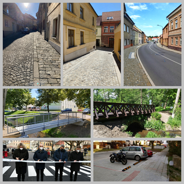

Dopravní infrastruktura

Naše město je přirozeným střediskem našeho mikroregionu. Na Žižkově náměstí a v jeho blízkosti se sbíhají silnice ze sedmi stran. Toto přináší zvýšený provoz a nutnost řešit bezpečnost řidičů a především chodců.
V minulosti zde byl spor o to, jak odklonit dopravu z města. Tak jako v mnoha jiných městech i u nás tento spor občany rozdělil, nezřídka podle osobních zájmů. Tento spor za nás rozhodl Jihočeský kraj, který rozhodl o vybudování tzv. severního obchvatu. Jde o krajskou komunikaci, proto je toto rozhodnutí v kompetenci krajského zastupitelstva, stejně tak projektování a samotná realizace je záležitostí kraje.
V současné době jihočeský kraj vybral firmu, která obchvat projektuje. Oproti minulosti jsme jako zástupci města přizváni ke koordinaci tohoto projektu. Velkým posunem je, že se nám podařilo k těmto jednáním přizvat i firmy, v jejichž blízkosti by nová komunikace měla vést. Díky těmto jednáním se podařilo odstranit sporná místa a jednání se významně posunula. I připomínky města především k napojení na stávající komunikaci - u Otěvěka i u křižovatky ulic Budovatelské, Nové město a komunikace k Velkému rybníku -byly přijaty. I proto zastupitelé města velmi operativně schválili návrh na aktualizaci územního plánu, aby se celý proces urychlil.
Také je potřeba ocenit spolupráci s Jihočeským krajem, díky které byly opraveny důležité mosty (v Bezručově ulici u polikliniky a v Husově ulici za křižovatkou s Pekárenskou). Díky rekonstrukci mostu u polikliniky se nám podařilo společně opravit i lávku přes Svinenský potok, kterou jsme byli nuceni uzavřít.
Dalším společným projektem byla celková rekonstrukce první části ulice Trocnovská a komunikace v dolní části Žižkova náměstí. Jihočeský kraj financoval opravu komunikace, město financovalo výměnu vodovodní a kanalizační sítě, chodníky, parkovací zálivy a veřejné osvětlení. Společně jsme připravili projekt na rekonstrukci zbylé části ulice Trocnovská.
Na přelomu září a října proběhne rekonstrukce ulice Dělnická, která sloužila jako objízdná trasa v průběhu rekonstrukce ulice Trocnovské.
Podařilo se
-
realizovat celkovou rekonstrukci Kostelní ulice.
-
aktivně se zapojit do projektování severního obchvatu.
-
společně s Jihočeským krajem realizovat celkovou rekonstrukci první části Trocnovské ulice a komunikace v dolní části Žižkova náměstí.
-
domluvit společnou opravu Dělnické ulice jako objízdné trasy.
-
při opravě krajských mostů v Bezručově a Husově ulice společně opravit i lávku u polikliniky.
-
postavit nový most nad památkově chráněným mostem v Pěčíně.
-
realizovat nová parkovací místa.
-
připravit projekt na rekonstrukci druhé části ulice Trocnovská.
-
připravit projekt na pokračování chodníku do Otěvěka.
-
postupně opravovat chodníky v různých částech města.
Chceme
-
společně s Jihočeským krajem pokračovat na přípravě projektu a na realizaci severního obchvatu.
-
společně s Jihočeským krajem rekonstruovat druhou část ulice Trocnovská.
-
usilovat o dotace na realizaci připravených projektů – ulice Pekárenská, chodník do Otěvěka – 2. část.
-
postupně rekonstruovat ulice v historickém centru.
-
aktualizovat projekt revitalizace sídliště Budovatelská s ohledem na rozhodnutí společnosti Jednota o přesunu prodejny.
-
zpracovat studii na revitalizaci ulice Sídliště, řešení zeleně, parkování atd.
-
připravit projekty pro nové chodníky – např. Štefánikova, u Cihelny.
-
pokračovat v opravách stávajících chodníků.